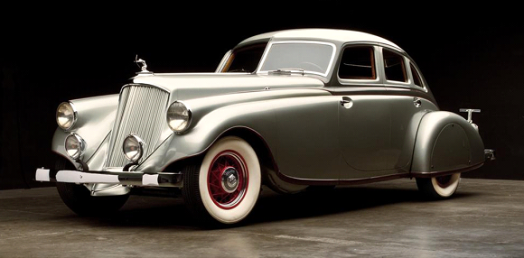
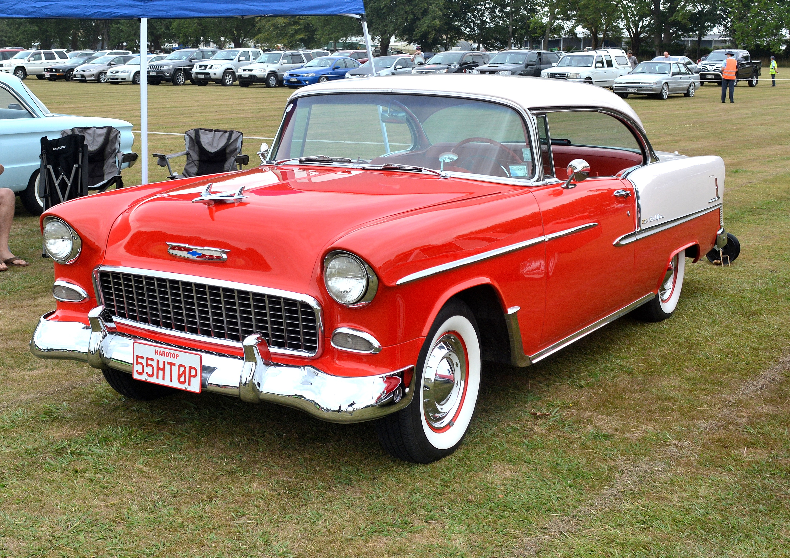
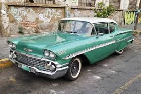

La historia del automóvil comenzó a finales del siglo XIX, cuando los avances en la ingeniería mecánica y el uso del motor de combustión interna permitieron el desarrollo de los primeros vehículos autopropulsados. Karl Benz es ampliamente reconocido como el inventor del primer automóvil práctico en 1886, con su "Benz Patent-Motorwagen", un vehículo de tres ruedas impulsado por gasolina. Al mismo tiempo, otros inventores en Europa y Estados Unidos, como Gottlieb Daimler y Wilhelm Maybach, también desarrollaban sus propios prototipos. Durante las primeras décadas del siglo XX, el automóvil pasó de ser una curiosidad para ricos a un medio de transporte accesible para las masas. Esto fue posible gracias a Henry Ford, quien revolucionó la industria con la producción en cadena del Ford Modelo T en 1908, reduciendo significativamente los costos de fabricación y el precio de venta. La masificación del automóvil transformó radicalmente las sociedades, impulsando el crecimiento de las ciudades, las carreteras y nuevas formas de vida.
Estos han sido algunos de los autos creados y emblematicos dentro de la historia.
  